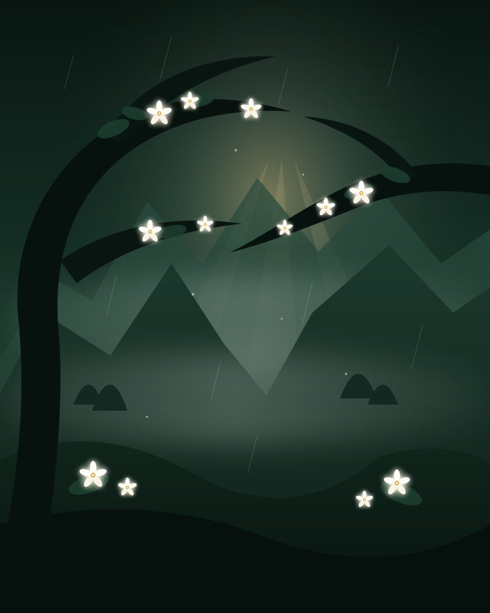

Ấn bản Sách Điện Tử Tương Tác
Muối Của Rừng
Hành trình đi săn trong tiết mưa xuân và cuộc thức tỉnh lương tri kỳ diệu trước vẻ đẹp thuần khiết của tự nhiên.
Thực hiện
NHÓM 3

Ấn bản Sách Điện Tử Tương Tác
Hành trình đi săn trong tiết mưa xuân và cuộc thức tỉnh lương tri kỳ diệu trước vẻ đẹp thuần khiết của tự nhiên.
Mùa xuân sau Tết một tháng, tiết trời ấm ẩm, mưa bụi giăng mờ, vừa thơ mộng vừa ẩn chứa hiểm nguy nơi vực Hõm Chết.
Cuộc đối đầu giữa thợ săn 60 tuổi mang khẩu súng hai nòng hiện đại và gia đình khỉ gắn bó tình nghĩa thủy chung.
Theo dõi 5 mắt xích cốt truyện đồng bộ với giọng đọc.
Cuộc đi săn thực chất là hành trình tước bỏ dần lớp vỏ văn minh giả tạo để đánh thức bản thể thiện lương. Chọn từng chặng để đối chiếu:
Thiên nhiên không trừng phạt tàn khốc mà dẫn dắt con người tự gột rửa lòng tham, trở về với phần người nguyên sơ, nhân hậu.
Cách gắn bản thu âm thật của Nhóm 3:
audio/tom-tat.mp3 (hoặc .m4a) trước khi đẩy lên GitHub Pages — web sẽ tự nhận và phát bản thu thật!